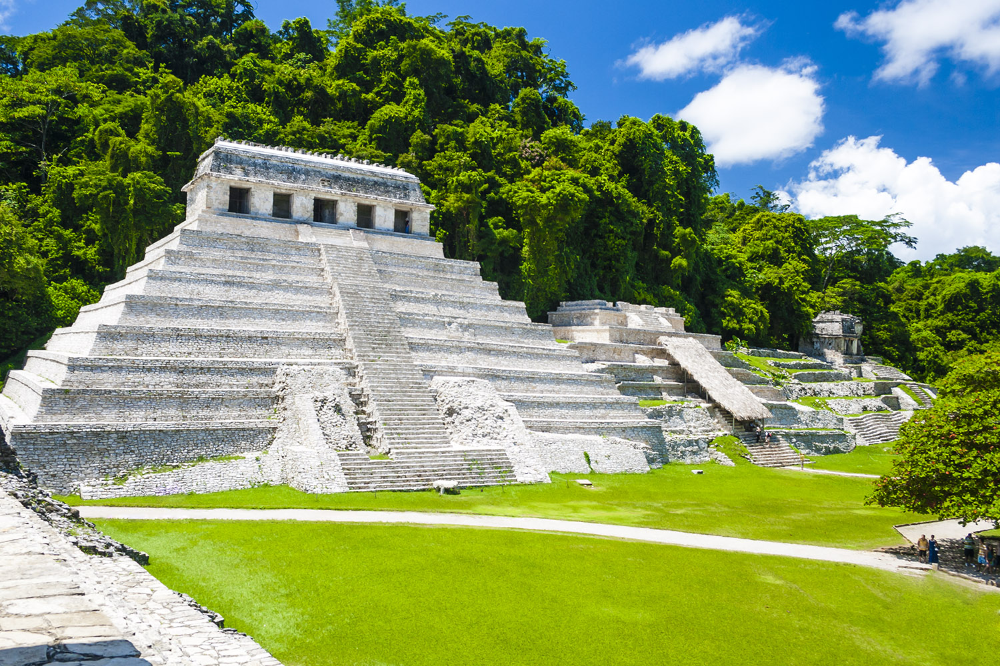

Mejores atracciones o destinos turísticos
- Ciudad de México
- Riviera Maya (Quintana Roo)
- Merida (Yucatán)
- Isla Mujeres (Quintana Roo)
- Acapulco (Guerrero)
- Palenque (Chiapas)
- Tulum (Yucatán)
- San Miguel de Allende (Guanajuato)
- Puerto Vallarta (Jalisco)
- Taxco (Guerrero)
- Xcaret (parque ecoarqueológico)
Riviera Maya

Palenque (Chiapas): Templo de las Inscripciones
Haz click aquí para más información sobre los mejores destinos turísticos de México